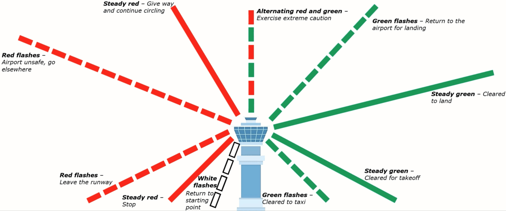

Lecture 4 · AIM 4
ATC & Communications
Who you talk to and when, and the transponder codes worth memorizing.
Who you talk to (the flow)
From taxi-out to taxi-in, you're handed between controllers in roughly this order:
Ground→
Tower→
Departure→
Center→
Approach→
Ground
Ground hands you off to Tower at the hold-short line; Tower clears the takeoff and passes you to Departure, and so on around to Ground again after you land.
Departure & arrival sequence
Departure
- ATIS — get weather + the info code.
- Ground Control — taxi clearance.
- Tower — takeoff clearance.
Arrival
- ATIS — get weather + the info code.
- Approach — inbound sequencing.
- Tower — landing clearance.
- Ground — taxi to parking.
Satellite airports
Departing a satellite airport inside Class C or D: contact ATC as soon as you take off.
Transponder & squawk codes
- Mode C = the transponder's ability to send altitude information to ATC. ADS-B Out goes along with the Mode C requirement.
- "Squawk VFR" = set 1200 = ends flight following.
1200
VFR7500
Hijack7600
Lost comms7700
EmergencyEmergency frequency
121.5 is the emergency / guard frequency (also where you monitor to check an ELT). 122.2 is the common Flight Service frequency.
Light-gun signals (lost comms)
If your radio fails (squawk 7600), the tower can direct you with a light gun.

| Signal | In flight | On the ground |
|---|---|---|
| Steady green | Cleared to land | Cleared for takeoff |
| Flashing green | Return for landing | Cleared to taxi |
| Steady red | Give way, keep circling | Stop |
| Flashing red | Airport unsafe — do not land | Taxi clear of the runway |
| Flashing white | — | Return to starting point |
| Alternating red/green | Exercise extreme caution | Exercise extreme caution |